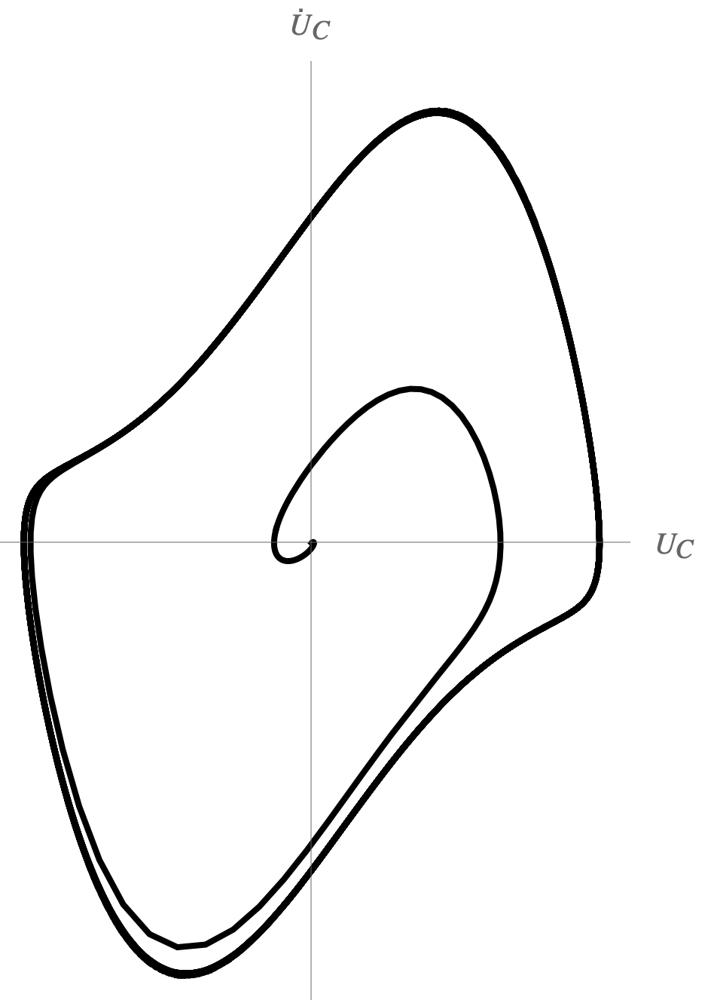

Y25 (2025) — English translation
At the initial moment, the electron acquires speed along the $Oy$ axis, along the electric field. This leads to the emergence of a magnetic force along $Oz$ and the appearance of a velocity component $v_z$. The magnetic force associated with $v_z$ is parallel to the $Oy$ axis. Thus, in the process of further movement, the forces acting on the electron lie in the $Oyz$ plane, from which follows $x(t) = 0$.
In a flat configuration, the electric field is uniform and equal to $$E_y = \frac{\varphi_К - \varphi_А}{h} = -\frac{U}{h}.$$Magnetic field wire wire for motion electron in plane $Oyz$ параллельно $Ox$ equal (for example, from theorem о циркуляции) $$B_x = -\frac{\mu_0 I}{2\pi(y+r_0)}.$$ Taking into account отрицательности sign charge electron obtain equations of motion: $$\begin{cases} m \ddot{y} = -eE_y - e\dot{z}B_x \\ m\ddot{z} = e\dot{y}B_x \end{cases}$$Substituting expressions for the fields, we get the answer.
Multiplying the second equation by $dt$, we arrive at the relation $$d\dot{z} = -\dfrac{\mu_0 e I}{2 \pi m (y+r_0)}dy.$$Integrate: $$\dot{z} = -\dfrac{\mu_0 e I}{2 \pi m} \int \frac{dy'}{y'+r_0} = -\dfrac{\mu_0 e I}{2 \pi m} \, \ln\left(1+\frac{y}{r_0}\right)+C.$$C accounting for initial condition $\dot{z} = 0$ for $y = 0$, then $C = 0$, and $$\dot{z} = -\dfrac{\mu_0 e I}{2 \pi m} \, \ln\left(1+\frac{y}{r_0}\right).$$ Постановка obtain expression in $(1)$ give $$\ddot{y} = \dfrac{e U}{m h} - \frac{1}{r_0}\left( \dfrac{\mu_0 e I}{2\pi m}\right)^2 \, \dfrac{\ln\left(1+\frac{y}{r_0}\right)}{1+\frac{y}{r_0}}. \tag{3}$$From here we get the answer.
After multiplying by $\dot{y}$, the equation $(3)$ is transformed to the form $$\frac{\dot{y}^2}{2} = \int \left(\dfrac{e U}{m h} - \frac{1}{r_0}\left( \dfrac{\mu_0 e I}{2\pi m}\right)^2 \, \dfrac{\ln\left(1+\frac{y}{r_0}\right)}{1+\frac{y}{r_0}}\right) dy.$$ Integral in second term: $$\int \dfrac{\ln\left(1+\frac{y}{r_0}\right)}{1+\frac{y}{r_0}} dy = r_0 \int \ln\left(1+\frac{y}{r_0}\right)d\left(\ln\left(1+\frac{y}{r_0}\right)\right) = \frac{r_0}{2} \ln^2\left(1+\frac{y}{r_0}\right) + C.$$ Taking into account initial condition $\dot{y} = 0$ for $y = 0$, then $C = 0$ , and $$\frac{\dot{y}^2}{2} = \frac{eUy}{mh} - \frac{1}{2} \left( \dfrac{\mu_0 e I}{2\pi m}\right)^2 \ln^2\left(1+\frac{y}{r_0}\right).$$ Condition достижения electron анода: $$\dot{y}(h) = 0, \\ 0 = \frac{eU}{m} - \frac{1}{2} \left(\dfrac{\mu_0 e I_{кр}}{2\pi m}\right)^2 \ln^2\left(1+\frac{h}{r_0}\right).$$Hence we get answer for $I_{cr}$.
Similar to the previous situation, it is shown that the movement will occur in the $Oyz$ plane if the axes are introduced in the same way as in the figure for a plane configuration.
Method 1
We will consider the movement in coordinates $(r, z)$, where $r$ is the distance from the system axis to the point. Let's calculate the electric field using Gauss's theorem. Due to the absence of volumetric charges $$E_r \cdot r = \mbox{const}. \quad \Rightarrow \quad E_r= \frac{A}{r}, \\ U = -\int \limits_{r_0}^{R_0} E_r dr = -A \ln\left(\frac{R_0}{r_0}\right), \\ E_r = -\frac{U}{r \ln \left(\frac{R_0}{r_0}\right)}.$$ Magnetic field: $$B_x = -\frac{\mu_0 I}{2 \pi r}.$$ Then equations of motion look like following manner: $$\begin{cases} \ddot{r} = -\dfrac{e U}{m r \ln \left(\frac{R_0}{r_0}\right)} + \dfrac{\mu_0 e I}{2\pi m (y+r_0)}\dot{z} \\ \ddot{z} = -\dfrac{\mu_0 e I}{2 \pi m (y+r_0)}\dot{r} \end{cases}$$ Аналогичным manner after integration second equation, substitution in first and повторного integration obtain equation on $I_{cr}$: $$\frac{e U}{m} - \frac{1}{2} \left(\frac{\mu_0 e I_{кр}}{2 \pi m} \right)^2 \ln^2 \left(\frac{R_0}{r_0}\right).$$ From here we get the answer.
Method 2
Let's consider the equations of motion from point A2, without substituting the specific values of $E_y$ and $B_x$: $$\begin{cases} \ddot{y} = -\dfrac{e}{m} \left(E_y(y) + \dot{z}B_x(y) \right) \\ \ddot{z} = \dfrac{e}{m} \dot{y}B_x(y) \end{cases}.$$ Taking into account initial condition from second equation obtain: $$\dot{z} = \frac{e}{m} \int \limits_0^y B_x(\xi) d\xi.$$Substitute in first equation: $$\ddot{y} = -\frac{e}{m}\left(E_y(y) + \frac{e}{m} B_x(y) \int \limits_0^y B_x(\xi) d\xi\right).$$Multiply by on $\dot{y}$ and integrate taking into account initial condition: $$\frac{\dot{y}^2}{2} = -\frac{e}{m} \int \limits_0^y E_y(\eta) d\eta - \frac{e^2}{m^2} \int \limits_0^y B_x(\eta) d\eta \int \limits_0^\eta B_x(\xi) d\xi = \\ = \frac{e}{m}\left(\varphi(y) - \varphi(0)\right) - \frac{e^2}{m^2} \int \limits_0^y B_x(\eta) d\eta \int \limits_0^\eta B_x(\xi) d\xi.$⟦1 0⟧$\frac{e}{m} \int \limits_0^h B_x(\eta) d\eta \int \limits_0^\eta B_x(\xi) d\xi = \varphi(y) - \varphi(0) = U.$$Thus, condition not depend from distribution field $E_y$, but only from difference potential $U$. Since distribution magnetic field in cylindrical and in flat system coincide, то and answer for $I_{cr}$ (with accuracy to substitution $R_0 = r_0 + h$) remains the same.
Note. It can be shown that $$\int \limits_0^h B_x(\eta) d\eta \int \limits_0^\eta B_x(\xi) d\xi = \frac{1}{2} \left(\int\limits_0^h B_x(\xi)d\xi)\right)^2.$$ Thus, condition on достижение electron анода: $$\int\limits_0^h B_x(\xi)d\xi = \sqrt{\frac{2mU}{e}}.$$ Интересный факт заключается in that, that find condition depend only from value determined integral electric and magnetic field by $y$, but not from a specific field distribution.
It can be shown that
$$\int \limits_0^h B_x(\eta) d\eta \int \limits_0^\eta B_x(\xi) d\xi = \frac{1}{2} \left(\int\limits_0^h B_x(\xi)d\xi)\right)^2.$$
Thus, the condition for the electron to reach the anode is:
$$\int\limits_0^h B_x(\xi)d\xi = \sqrt{\frac{2mU}{e}}.$$
An interesting fact is that the found condition depends only on the values of certain integrals of the electric and magnetic field over $y$, but not on the specific field distribution.
Method 1
Let's write Gauss's theorem for two planes $y$ and $y + dy$: $$\left(E(y+dy) - E(y)\right)S = \frac{\rho(y)}{\varepsilon_0} S dy, \\ E'(y) = \frac{\rho(y)}{\varepsilon_0}.$$Taking into account relation $$E(y) = -\varphi'(y)$$ we get the answer.
Method 2
Gauss's theorem in differential form: $$\dfrac{\rho}{\varepsilon_0} = \operatorname{div} \vec{E}.$$Relation $E$ and $\varphi$: $$E =-\operatorname{grad} \varphi.$$Then $$\dfrac{\rho}{\varepsilon_0} = -\operatorname{div} \operatorname{grad} \varphi = -\Delta \varphi,$$here $\Delta = \frac{\partial^2}{\partial x^2} + \frac{\partial^2}{\partial y^2} + \frac{\partial^2}{\partial z^2}$ is the Laplace operator (Laplacian), the equation itself is called the Laplace equation. In the one-dimensional case this transforms to the form
Let us write down the law of conservation of energy for the electron: $$\frac{mv^2(y)}{2} - e\varphi(y) = 0.$$From this follows the answer.
Taking into account the indicated positive direction of current from the anode to the cathode
Taking into account the previous points: $$\rho(y) = -\frac{I}{S v(y)} = -\frac{I}{S} \sqrt{\frac{m}{2e\varphi(y)}}.$$Постановка $\rho(y)$ into the equation of point B1 leads to the answer
Multiplying both sides of the equation of item B4 by $\varphi'(y)$ and integrating taking into account $\varphi'(0) = 0$, we arrive at the equation $$(\varphi')^2 = \dfrac{I}{\varepsilon_0S}\sqrt{\dfrac{8m}{e}} \sqrt{\varphi}.$$ Variable in it разделяются: $$\varphi^{-1/4}d\varphi = \left(\dfrac{I}{\varepsilon_0S}\right)^{1/2}\left(\dfrac{8m}{e}\right)^{1/4}dy.$$ Apply initial condition $\varphi(0) = 0$, obtain $$\dfrac{4}{3}\varphi^{3/4} = \left(\dfrac{I}{\varepsilon_0S}\right)^{1/2}\left(\dfrac{8m}{e}\right)^{1/4}y.$$ Transforming the resulting expression, we arrive at the answer.
$$(\varphi')^2 = \dfrac{I}{\varepsilon_0S}\sqrt{\dfrac{8m}{e}} \sqrt{\varphi}.$$
The variables in it are separated:
$$\varphi^{-1/4}d\varphi = \left(\dfrac{I}{\varepsilon_0S}\right)^{1/2}\left(\dfrac{8m}{e}\right)^{1/4}dy.$$
Applying the initial condition $\varphi(0) = 0$, we obtain
$$\dfrac{4}{3}\varphi^{3/4} = \left(\dfrac{I}{\varepsilon_0S}\right)^{1/2}\left(\dfrac{8m}{e}\right)^{1/4}y.$$
Transforming the resulting expression, we arrive at the answer.
The value $G$ is called the lamp perveance.
The voltage across the lamp is equal to the potential at point $y = h$: $$U = \varphi(h) = \left(\dfrac{3h}{4}\right)^{4/3} \left(\dfrac{I}{\varepsilon_0S}\right)^{2/3}\left(\dfrac{8m}{e}\right)^{1/3}.$$Express current: $$I(U) =\varepsilon_0 S \left(\dfrac{4}{3h}\right)^{2}\left(\dfrac{e}{8m}\right)^{1/2} U^{3/2}.$$Then
Using the results of points B1 or B4, we express $\rho(y)$ in terms of $\varphi(y)$: $$\rho(y)=-\varepsilon_0\cdot \varphi''(y) = -\frac{I}{S} \sqrt{\frac{m}{2e\varphi(y)}}.$$Substitute find $\varphi(y)$, we arrive at the answer
At $U<0$ the field is directed along the $y$ axis, and the electrons emitted from the cathode do not move towards the anode, which means $I=0$.
The current flowing in a cylindrical configuration is $$I = -2\pi r L \rho(r) v(r).$$Taking into account expression for velocity obtain $$\rho(r) = -\frac{I}{2\pi r L} \sqrt{\frac{m}{2 e \varphi(r)}}$$
Method 1
Consider cylindrical surfaces of length $L$ and radii $r$ and $r + dr$. Gauss's theorem in this case will be written in the form: $$2\pi L \left(E(r+dr)(r+dr) - E(r)r\right) = \frac{2\pi L r \rho(r) dr}{\varepsilon_0}, \\ \frac{1}{r} \frac{d}{dr}\left(rE(r)\right) = \frac{\rho(r)}{\varepsilon_0} = -\frac{I}{2\pi r L \varepsilon_0} \sqrt{\frac{m}{2 e \varphi(r)}}.$$Use $E(r) = -\varphi(r)$, we arrive at the equation for the potential.
Method 2
In method 2 of point B1, $$\Delta \varphi = -\frac{\rho}{\varepsilon_0}.$$Оператора Лапласа in cylindrical coordinate: $$\Delta \varphi = \frac{1}{r} \frac{\partial}{\partial r} \left(r \frac{\partial \varphi}{\partial r}\right) + \frac{1}{r^2} \frac{\partial^2 \varphi}{\partial \theta^2} + \frac{\partial^2 \varphi}{\partial z^2}.$$in force осевой симметрии system and $E_z = 0$ last two term equal zero. After substitution $\rho$ through $I$ was obtained, we get the answer.
The current in the RLC circuit is related to the capacitor voltage: $$I = C\dot{U}_С.$$Then for RLC-circuit be written law Кирхгофа: $$M \frac{dI_А}{dt} = U_С + RC\dot{U}_С + LC \ddot{U}_С \tag{1}$$(with accuracy to sign $M$). Use expression for $I_А(U_С)$, obtain $$\frac{dI_А}{dt} = \left(\lambda - 3\mu U_С^2\right)\dot{U}_С. \tag{2}$$After substitution $(2)$ in $(1)$ and сокращения on $LC$, приходим to equation $$\ddot{U}_С + \left(\frac{R}{L} - \frac{\lambda M}{LC} +\frac{3\mu M}{LC}U_С^2 \right) \dot{U}_С + \frac{U_С}{LC} = 0.$$Comparing it with the data in the condition, we get the answer.
For small $U_С$ we can neglect the $\sim U_С^2$ term in the equation and write it in the form: $$\ddot{U}_С + \zeta\dot{U}_С+\chi U_С = 0.$$
Method 1 (mathematical)
Let's introduce the notation: $$\zeta = 2\gamma, \qquad \qquad \chi = \omega_0^2.$$ As известно, solution such differential equation have different form in dependence from parameter $\gamma$, $\omega_0$. $\gamma^2 < \omega_0^2$ $$U_С(t) = e^{-\gamma t}\left(A \cos\left(\sqrt{\omega_0^2 - \gamma^2} \cdot t \right) + B \sin \left(\sqrt{\omega_0^2 - \gamma^2} \cdot t \right)\right).$$ $\gamma^2 = \omega_0^2$ $$U_С(t) = e^{-\gamma t}(A + Bt).$$ $\gamma^2 > \omega_0^2$ $$U_С(t) = e^{-\gamma t}\left(A \exp\left(\sqrt{\gamma^2-\omega_0^2} \cdot t \right) + B \exp\left(-\sqrt{\gamma^2-\omega_0^2} \cdot t \right)\right).$$ Second case not have физического смысла, since требуется точное выполнение condition $\gamma^2 = \omega_0^2$. in remaining case, as it can be seen, раскачка possible only for condition $\gamma < 0$, that is $\zeta < 0$.
As is known, the solution to such a differential equation has a different form depending on the parameters $\gamma$, $\omega_0$.
The second case has no physical meaning, since the exact fulfillment of the condition $\gamma^2 = \omega_0^2$ is required. In other cases, as can be seen, swinging is possible only under the condition $\gamma < 0$, that is, $\zeta < 0$.
In the third case, this does not lead to exponential growth of $U_С$, since the resulting linear equation is valid only for small $U_С$. A characteristic phase diagram of the exact solution is shown in the figure.
Method 2 (energy)
Energy in the RLC circuit: $$W = \frac{CU_С^2}{2} + \frac{LC^2 \dot{U}^2_С}{2}.$$Differentiate by time: $$\dot{W} = CU_С \dot{U}_С + LC^2\dot{U}_С \ddot{U}_С = C\dot{U}_С(U_С + LC \ddot{U}_С).$$Substitute $\ddot{U}_С$ from исходного equation, express it through $\dot{U}_С$, $U_С$. After transformation приходим to expression $$\dot{W} = С\dot{U}^2_С(M \lambda - RC - 3\mu M U_С^2).$$For small $U_С$: $$\dot{W} \simeq С\dot{U}^2_С(M \lambda - RC).$$For раскачки oscillation necessarily $\dot{W} > 0$, which is equivalent
